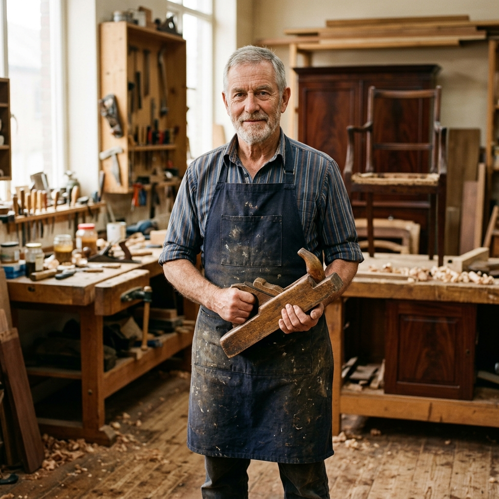
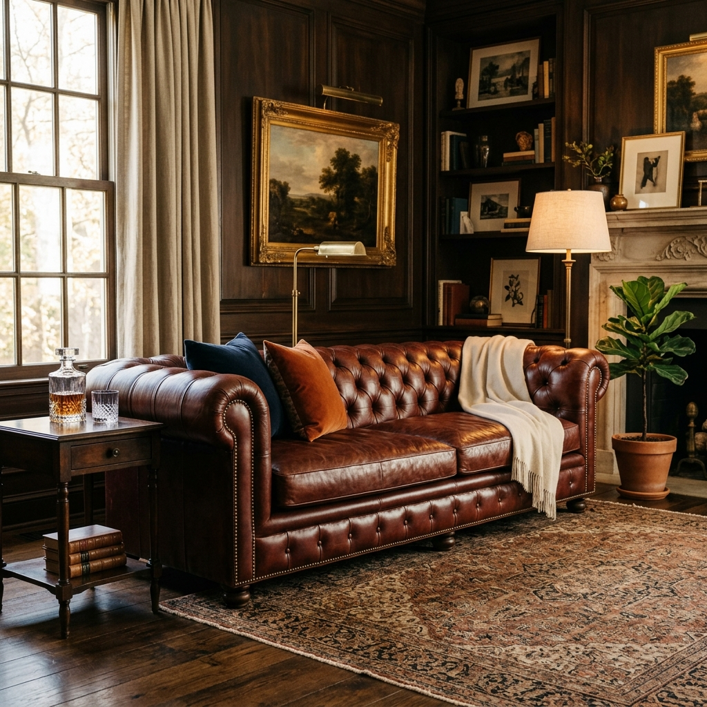
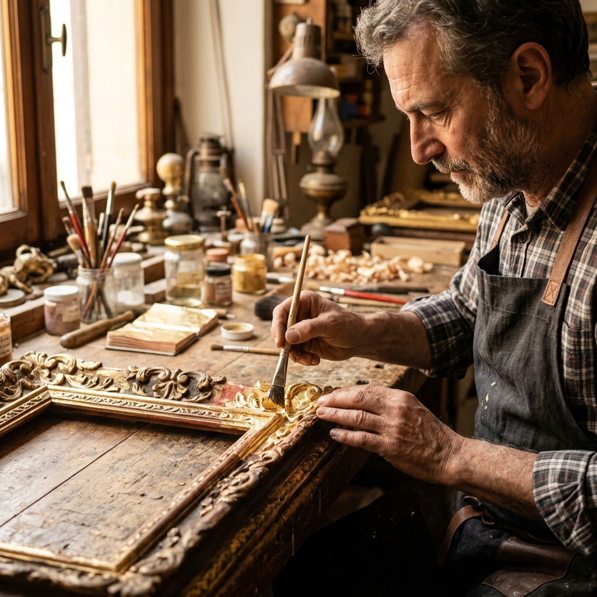
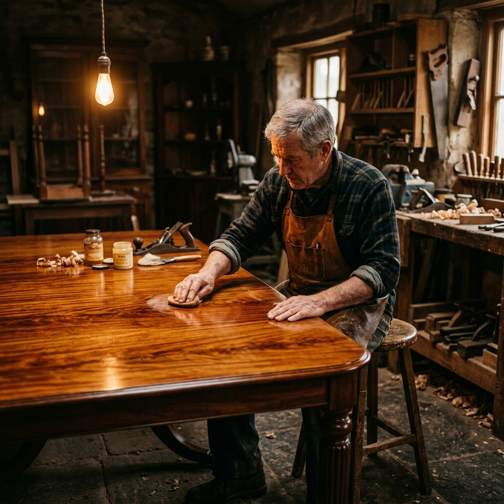
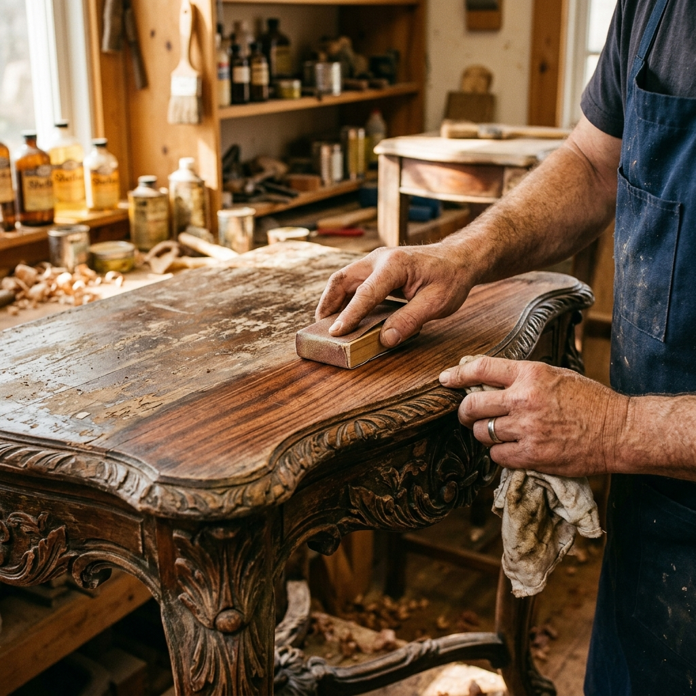

Crafting Legacy Since 1999
A family workshop rooted in tradition, dedicated to preserving the furniture that carries your stories.
Preserving Beauty, One Piece at a Time
We believe furniture is more than function — it carries memory, identity, and history. Our mission is to honour that by restoring every piece with the reverence it deserves.
From an Edwardian chiffonier to a 1960s Scandinavian sideboard, we approach each project as a collaboration between past craftsmanship and present expertise.
Authenticity
Period-correct materials, finishes, and techniques always.
Integrity
Transparent quotes, honest timelines, no hidden fees.
Excellence
Every piece leaves our workshop to museum standard.
Sustainability
Restoration is the greenest choice — no landfill, no waste.

A Journey Through Time
Founded in Shoreditch
Thomas Wren opens a one-room workshop with a single workbench and a set of inherited hand tools from his grandfather.
First Museum Commission
Contracted to restore a collection of 17th-century oak pieces for a Hampshire estate — our reputation for antique conservation is born.
Upholstery Studio Opens
Clara Hayes joins as Head of Upholstery, expanding our offering to include full fabric and leather restoration.
New Heritage Quarter Workshop
We move to a purpose-built 4,000 sq ft studio with dedicated finishing, conservation, and upholstery bays.
500th Restoration Milestone
We celebrate our 500th completed project — a pair of Georgian mahogany card tables restored for a private collector.
Our Core Values
Traditional Craft
We never take shortcuts. Every repair is done by hand using the correct technique for the period and piece.
Client Respect
We listen first, advise second. Your furniture carries meaning — we treat that with profound care.
Continuous Learning
Our craftsmen regularly attend conservation courses, workshops, and international seminars to stay at the forefront of the field.
Master Craftsmen & Specialists
Each member of our team has a minimum of 10 years specialist experience.

Thomas Wren
Founder & Master Cabinetmaker
25 yrs · Period English Furniture

Clara Hayes
Head of Upholstery
18 yrs · Victorian & Edwardian Textiles

David Osei
Antique Conservation
15 yrs · French Polishing & Marquetry

Anna Beckett
Finishing Specialist
12 yrs · Lacquer, Shellac & Oil Finishes
What Our Clients Say
Artisan Restore gave back a piece of my family's history. The care and expertise shown was extraordinary — I couldn't be more grateful.
Professional, transparent, and genuinely passionate about their work. The before and after photos they sent during the process were incredible.
I thought my antique writing desk was beyond saving. Thomas assessed it in 20 minutes and delivered a flawless restoration within two weeks.
The upholstery team found an exact period match for our Chesterfield fabric. The finished piece looks like it walked out of a Bond Street showroom.
Certifications & Awards
Industry recognition that reflects our commitment to the highest standards of craftsmanship.




